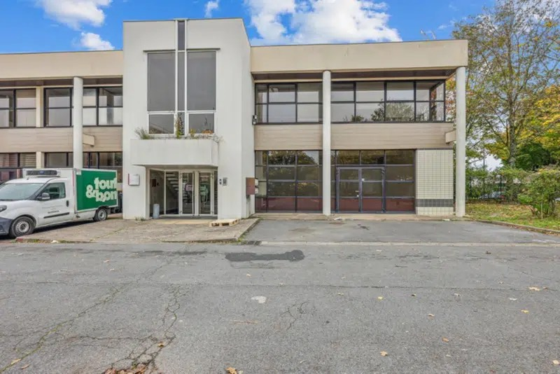

STAGE
Ici vous allez voir les différent projet et mission que j'ai réaliser en Stage au sein de l'espace informatique de Vincennes
Présentation de l'entreprise
L'espace informatique de vincennes est une entreprise crée par la mairie de vincennes en 2009, cet entreprise diriger par David Chemla a pour but de proposer des formation financé par un compte cpf ou l'afc (Actions de formation conventionnées) à travers l'informatique (Javascript, HTML, CSS, Python), le montage vidéo (Adobe Premuim,Capcut) ou des formations bureautique (World, Excel ,Powerpoint, Outlook).
Mission réaliser en stage
Mission Simple
Lors de mes premiers jours au sein de l'entreprise, mon tuteur n'avait pas réellement de grandes missions à me confier, car il souhaitait probablement que je m'adapte progressivement à mon nouvel environnement de travail. Par conséquent, il m'a attribué des tâches relativement simples, destinées à me familiariser avec les outils, les processus et les attentes de l'équipe. Ces missions incluaient notamment des activités telles que :
DIPLÔME ET CERTIFICATIONS
Ici vous allez apercevoir les différentes certifications et diplômes que j'ai obtenus au cours de mes différentes formation.
Attestation de comptétances en langues vivantes (ÉTRANGÈRES ET RÉGIONALES)
Baccalauréat STMG
Voici mon relevé de note du baccalauréat STMG option SIG obtenu en juin 2023 au lycée Flora Tristan à Noisy-le-Grand.